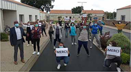

Charente-Maritime
Vol de masques : un "happy end" inattendu
Le personnel de l’association Emmanuelle a posé pour remercier le donateur de masques. PHOTO ASSOCIATION EMMANUELLE
Solidarité - Le directeur d'une entreprise rochelaise, ému par le vol commis à Saintes, a offert des masques à l'établissement médico-social lésé
La semaine dernière, Sudouest.fr se faisait l'écho de la mésaventure d'une directrice d'établissement médico-social, victime d'un vol de masques médicaux dans sa voiture, stationnée la nuit à Saintes. Elle avait exposé sa colère en placardant des affichettes à l'attention des voleurs dans le quartier Saint-Eutrope.
Ému par cette mésaventure, Ahmed Mansouri, directeur de la cimenterie Eqiom à La Rochelle, avait contacté notre rédaction en se proposant d'offrir des masques professionnels à l'établissement lésé.
Problème : la directrice n'avait pas laissé de coordonnées sur ses affichettes. " Sud Ouest " s'est alors rapproché du commissariat de police de Saintes qui avait enregistré la plainte et qui a immédiatement complété la chaîne de solidarité en mettant en contact la victime du vol et le généreux donateur.
Dès le lendemain, Ahmed Mansouri, abondé dans son geste par son fournisseur SBF, pouvait remettre 2 000 masques à Valérie Vincent, directrice de la maison d'accueil spécialisée qui accueille des adultes autistes, à Gémozac. La rencontre s'est faite à Châtelaillon, au siège de l'association Emmanuelle qui gère cette structure.
Par Thierry Collard
Publié le 30/04/2020